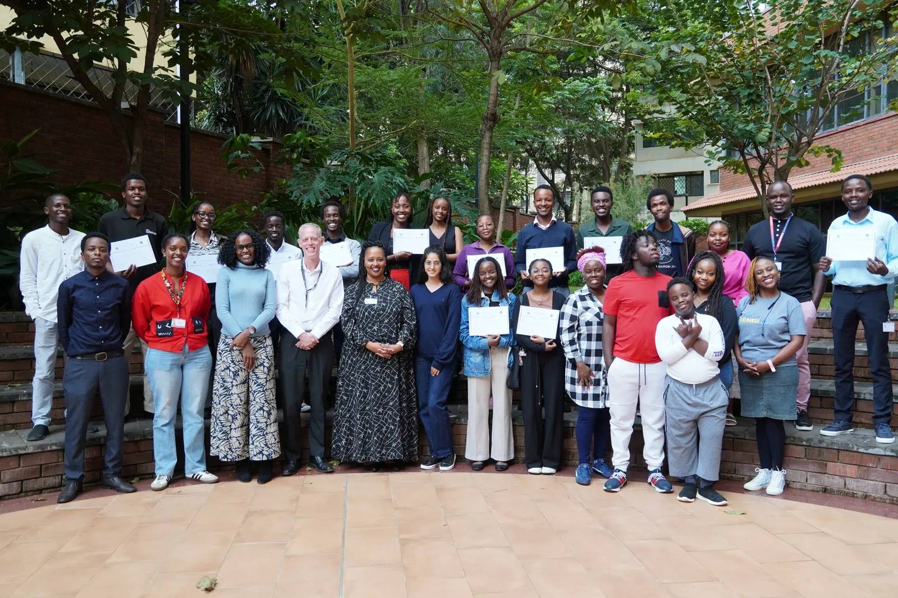

What we do
Build with people,
not around them.
Hackcessible is a student-led programme where learners from every discipline work alongside families, clinicians and engineers to explore assistive technology challenges. Teams listen first, then prototype, test and learn in the real world.
Our model draws inspiration from the University of Sheffield’s Hackcessible programme and is shaped for Nairobi through CIME at Aga Khan University, Kenyatta University–CDIE and M5 Engineering.
ListenCo-designPrototypeLearnListenCo-design
Explore
CohortsTwo teams.
The organisers
Bring your
Two teams.
Two lived challenges.
Meet TimeKeeper and Sawa, then open each 2026 case study.
Explore the work → PeopleThe organisers
behind the room.
Meet the people who convened, mentored and supported the cohort.
Meet the organisers → Student interestBring your
discipline.
Join the interest list for future Hackcessible opportunities. This is not an application.
Register interest →